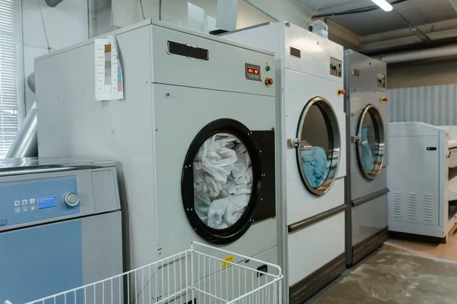

7 Signs Your Dryer Needs Repair in Sarasota
Learn the key signs that indicate your dryer needs repair in Sarasota to prevent further issues and ensure efficient operation.

Dryer repair in Sarasota is crucial when your appliance shows signs of malfunction. Identifying these signs early can save you from costly repairs and ensure your dryer operates efficiently. This article outlines the seven key signs that indicate your dryer needs repair.
What is Dryer Repair?
Dryer repair is a service that addresses issues preventing your dryer from functioning properly. It includes diagnosing problems and performing necessary repairs to restore the appliance's efficiency.
1. Dryer Not Heating
A common issue faced by homeowners in Sarasota is when the dryer fails to heat. This can result from a malfunctioning heating element or a blown fuse. If your dryer is running but not producing heat, it's time to consider Dryer Not Heating Repair Sarasota FL. Ignoring this issue can lead to longer drying times and increased energy costs.
2. Unusual Noises
If your dryer starts making loud or unusual noises, it may indicate a serious problem. Common sounds include grinding, thumping, or squeaking, which could suggest worn-out parts like the drum rollers or bearings. Residents near Gulf Gate Estates often report these issues due to older appliance models. Addressing these noises early can prevent further damage and costly repairs.
3. Dryer Not Starting
When your dryer refuses to start, it can be frustrating. This issue can stem from a faulty door switch, a broken timer, or even an electrical problem. If you find yourself facing this issue, seek out Dryer Not Starting Repair Sarasota FL to diagnose the underlying cause and restore functionality.
4. Clothes Take Too Long to Dry
If your clothes are taking longer than usual to dry, it could be a sign of a clogged vent or a malfunctioning thermostat. This issue is particularly common in Sarasota during the humid summer months, where proper airflow is essential. Regular maintenance can help avoid these problems, but if you notice a significant change, consider professional help.
5. Burning Smell
A burning smell coming from your dryer is a serious concern. This can indicate overheating, which may be caused by lint buildup in the vent or a malfunctioning motor. If you detect this smell, stop using the dryer immediately and contact a professional for Electric Dryer Repair Sarasota FL. Ignoring this warning can lead to fire hazards.
6. Excessive Vibrations
Excessive vibrations during the drying cycle can indicate an unbalanced load or worn-out suspension springs. If your dryer shakes violently, it's essential to check the load size and redistribute items. If the problem persists, you might need a Dryer Belt Replacement Sarasota FL to ensure proper function.
7. Error Codes on the Display
Modern dryers often have digital displays that show error codes when something is wrong. If you see an error code, consult your user manual to identify the issue. Many Sarasota residents benefit from professional help to interpret these codes and perform necessary repairs.
Common Mistakes
Homeowners often overlook the importance of regular maintenance, which can lead to significant issues. Here are some common mistakes to avoid:
- Ignoring warning signs like unusual noises or smells.
- Overloading the dryer, which can cause strain on the motor.
- Neglecting to clean the lint filter and vent regularly.
When to Call a Professional
Knowing when to call a professional can save you time and money. If you encounter any of the above signs, especially burning smells or error codes, it's advisable to contact Dryer Repair Sarasota for assistance. Professional technicians can diagnose and fix issues efficiently, ensuring your dryer operates safely.
Frequently Asked Questions
- What should I do if my dryer is making a loud noise? If your dryer is making loud noises, check for unbalanced loads. If the problem persists, contact a professional for repair.
- How often should I clean my dryer vent? It's recommended to clean your dryer vent at least once a year to prevent lint buildup and ensure efficient operation.
- What causes a dryer to not heat? Common causes include a faulty heating element, blown fuse, or clogged vent. A professional can diagnose the exact issue.
- How much does dryer repair cost in Sarasota? Dryer repair costs in Sarasota vary depending on the specific diagnostic findings and the necessary OEM replacement parts. Our technicians provide an upfront, transparent estimate before performing any repair work, with no surprise add-ons.
Get Help with Appliance in Sarasota
If you suspect your dryer needs repair, don't hesitate to reach out. Contact us at 941 123 4567 for expert appliance repair services in Sarasota.